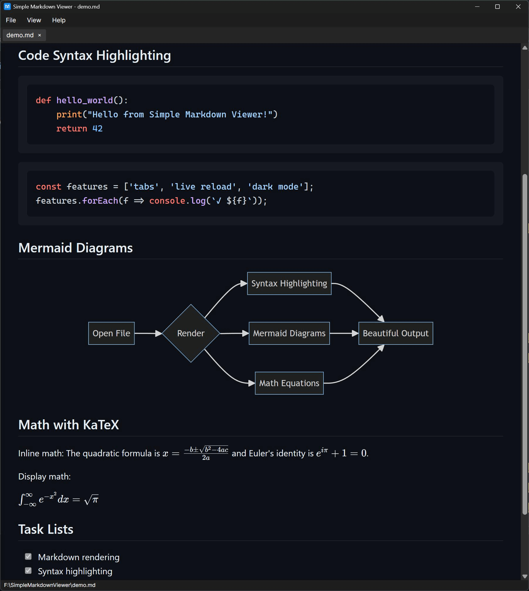

welcome.md
Preview
Open a .md file. See it rendered.
A small, free markdown and Mermaid viewer for Windows. Press Ctrl+E to edit side by side, like this.
- Live reload when the file changes
- Tabs, diagrams, math and code highlighting
- Dark and light themes
This side is markdown. Try changing it.

Everything a markdown file can hold
Open a README, a design doc or a folder of notes, and it looks the way the author meant. Diagrams and equations included.
Reading
- Live reload
- Save the file in any editor and the preview updates in place, without losing your scroll position.
- Tabs
- Keep several files open at once. Right-click a tab to close others or everything to its right.
- Links that go where you expect
- Web links open in your browser, links to other markdown files open in a new tab, and relative images load from the document's folder.
- Drag and drop, recent files, print to PDF
- Drop files onto the window, reopen them from the recent list, or print through the system dialog.
Writing
- Split-view editor
- Press Ctrl+E for a syntax-highlighted editor beside the live preview.
- Format menu
- Right-click in the editor for bold, italic, links, headings, lists, code blocks and more.
- New, Save and Save As
- Start documents from scratch. You're asked before closing anything unsaved.
- Paste as a new document
- Turn clipboard text into an untitled document with Ctrl+Shift+V.
Rendering
- Mermaid diagrams
- Flowcharts and sequence diagrams in fences, plus standalone
.mmdfiles. Click a diagram to view it full screen with zoom and pan. - KaTeX math
- Inline
$...$and display$$...$$LaTeX. - Code highlighting
- Fenced code blocks are highlighted by highlight.js.
- Themes and custom CSS
- Switch between dark and light, and restyle either one with your own stylesheet. Source line numbers are one click away in the View menu.
Safety
- Scripts never run
- JavaScript embedded in a markdown file is blocked, so it's safe to open files from anywhere. Ordinary HTML such as
<details>and<img>still renders. - Update checks you can turn off
- Once a day at most, the app asks GitHub whether a newer version exists. Nothing is downloaded automatically and nothing about you or your files is sent.
- Open source
- MIT licensed and built in the open on GitHub. Bug reports and pull requests are welcome.
Opens
.md .markdown .mdown .mkd .mkdn .mdwn .mdtxt .mdtext .mdx .rmd .mmd .mermaid.
The installer can make it the default app for any of them.
Keyboard shortcuts
Ctrl on every platform.
- Ctrl+N
- New document
- Ctrl+E
- Toggle edit mode
- Ctrl+O
- Open file
- Ctrl+S
- Save
- Ctrl+W
- Close tab
- Ctrl+Shift+S
- Save as
- Ctrl+Shift+V
- New from clipboard
- Ctrl+B I K
- Bold, italic, link
- Ctrl+Shift+C
- Copy markdown
- Ctrl+P
- F5
- Refresh and reapply custom CSS
- Esc
- Close a full-screen diagram
macOS and Linux
There's no packaged download for these yet, but the app is cross-platform and builds with the .NET 10 SDK. These builds haven't been tested much, so please open an issue if something doesn't work.
- macOS uses the built-in WKWebView. Use
osx-arm64on Apple Silicon orosx-x64on Intel. - Linux needs WebKitGTK:
libwebkit2gtk-4.1-0on Ubuntu and Debian,webkit2gtk4.1on Fedora and Arch.
Terminal
# Get the source git clone https://github.com/KrunchMuffin/SimpleMarkdownViewer.git cd SimpleMarkdownViewer # Run it dotnet run # Or publish a standalone build (swap in your platform) dotnet publish -c Release -r osx-arm64 --self-contained -o publish